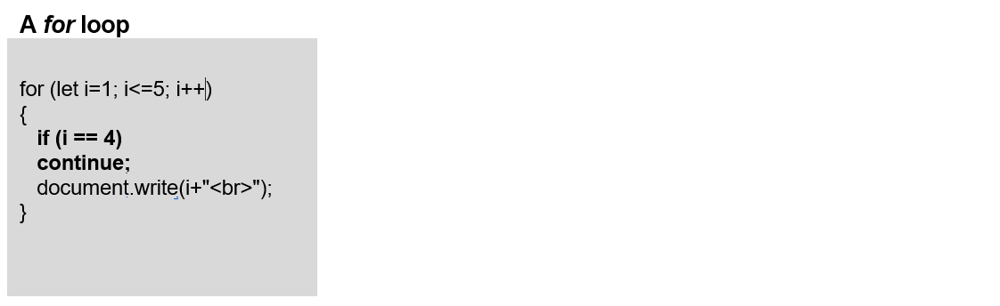

Learning Goals
In this Lesson, you will learn how to:
- Create a for loop with a counter variable, a starting value, a loop condition and an increment (++) or decrement operator (--)
- Interrupt any loop type with a break command that, when the counter variable reaches a specified value, tells JavaScript to exit the loop
- Interrupt any loop type with a continue command that, when the counter variable reaches a specified value, tells JavaScript to return to the top of the loop as if all the statements have been performed.
In this Tutorial, you will meet the following terms:
- Loop
- Iteration
- Loop counter variable
In your javascript/exercises folder, create a new sub-folder named 15.
Save the exercise file below to this new javascript/exercises/15 sub-folder.
Going on and on — until it stops: a loop
A loop is a programming structure that repeats an instruction or series of instructions when certain conditions are satisfied, and then stops. JavaScript offers three types of loops.
Loop
A script that performs a statement or series of statements repeatedly until a certain condition is satisfied. The loop then stops and the next statement in the script after the loop is performed.
The JavaScript for Loop
This is the most common loop in JavaScript. Use a for loop when you know in advance how many times you want the loop to repeat.
A basic for loop in JavaScript looks as shown below.
for (let i = 1; i <= 5; i++) { // perform statements(s); }
Let's examine each element in detail.
- for: Always type 'for', not 'FOR' of 'For'. The for keyword is case-sensitive.
- i: Every loop has a counter variable that tracks how many times the loop has been performed. The counter variable is typically named with the lower-case letter i. Some developers prefer the letter n, while others use the word count or counter. See below.
for (let counter = 1; counter <= 10; counter++) { // perform statements(s); }
- let i = 1: The loop has to start somewhere. Typically, the initial value is 1 0. It could also be 12, 56, 78 or whatever. When looping through zero-indexed strings, arrays or objects, this initial value is typically 0.
- i <= 5: You don't want a loop to run indefinitely, so you set an upper limit.
- i++: This tells JavaScript to increment (add 1 repeatedly) to the counter variable until the variable reaches the upper loop limit (in this case, 5). It does not have to be the increment operator. A loop can contain the decrement operator, i--.
About loop conditions
Every loop type contains some type of condition statement. As with the if command, condition statements in loops include comparison operators such as greater than (>) or equal to (==).
- When the condition is tested and satisfied, the loop runs.
- After every time that the loop runs, it tests the condition again.
- The loop will keep repeating until the condition is no longer satisfied.

The initial and upper values of a for loop do not have to be literals, such as 3 or -42. They can also be variables whose values come from elsewhere in the code or from a user input. For example:
for (i = baseTemperature; i <= userTemperature; i++);
The general syntax of a for loop is shown below.
for (initialisation; condition statement; counter variable update) {
statements(s) containing counter variable;
}
Developers use a special term to describe the performance of a loop: iteration.
Iteration
A single performance of a loop. If a loop runs five times, it is said to have performed five iterations.
Loop Counter Variable
The variable in a loop structure that keeps track of how many loop iterations have been performed. The variable is typically named 'i'. Alternative names include 'n', 'count' or 'counter'.
Exercise 15.1: Building a simple for loop
In this exercise, you will create a simple for loop structure.
Into the first js-box DIV of the Lesson exercise file, copy-and-paste the following loop inside the <script> tag:
for (let i = 1; i <= 5; i++) { // perform statement; document.write(`This is loop step number: <b>${i}</b>.<br>`); }
Save and reload your web page. The result should look as shown below.

Edit the loop condition as shown below, and save and reload your web page.
(let i = -5; i <= -1; i++)
You should now see the following output.

Exercise 15.2: Building a user-controlled for loop
In this exercise, you will create a for loop in which the number of iterations is not a fixed literal but a numeric variable input by the user.
Interrupting loops with break and continue
A for loop can include a break and/or continue statement that interrupts a loop when its counter variable reaches a certain value.
The break command tells JavaScript that, when the counter variable reaches a specified value, to exit the loop, and move on the next statement in the script after the loop. The break command comes before the statement(s) that are performed within the loop.
The continue command also interrupts the running of a loop, but it the message it sends to JavaScript is slightly different: when the counter variable reaches a specified value, don't perform the statement(s) in the loop, but return to the top of the loop as if all the statements have been performed. The loop then continues on as normal. You typically use the continue command to handle special or exceptional values of the counter variable.
Using a break statement
A break statement sends the following message to JavaScript:
When the counter variable reaches a specified value, exit the loop, and move on the next statement in the script after the loop.
The loops below run only when the counter variable has values of 1, 2 and 3. When the counter variable reaches a value of 4, the loops stop.

The break statement comes before the statement that is performed within the loop – in these three examples, a simple document.write() statement.
The interrupted loop generates the following output in a web browser window.
Using a continue statement
A continue statement also interrupts the running of a loop, but the message it sends to JavaScript is slightly different:
When the counter variable reaches a specified value, don’t perform the statement(s) in the loop, but return to the top of the loop as if all the statements have been performed.
The loop then continues on as normal. You typically use the continue command to handle special or exceptional values of the counter variable.
The loop below runs only when the counter variable has values of 1, 2, 3 and 5. When the counter variable reaches a value of 4, the loops stop, return to the top, and then continues on.
Exercise 15.3: Skipping unlucky number 13
Consider a for loop that counts from 1 to 20. Number 13 is considered unlucky. In Exercise 15.3, your task is to amend such a loop so that it skips the 13th iteration and restarts at number 14.
The loop should now run as shown below.